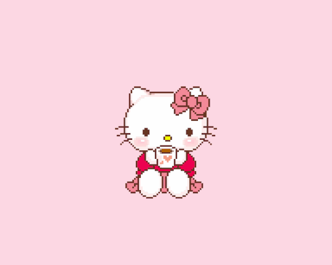
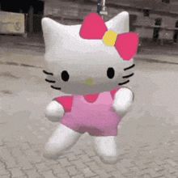
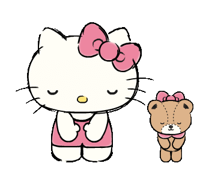

Es un famoso personaje ficticio creado por la compañía japonesa Sanrio en 1974 y diseñado originalmente por la artista Yuko Shimizu

Hello Kitty representa la ternura, la amistad, la inocencia y el optimismo

Hello Kitty es originaria de Japón, creada por la diseñadora Yuko Shimizu en 1974 para la compañía japonesa Sanrio.